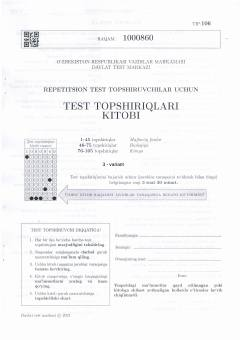

RT2021-yilgi repetitsion test sinovlari uchun mo'ljallangan o'quv testlar to'plami.
Ushbu kitob O'zbekiston Respublikasi Vazirlar Mahkamasi huzuridagi Davlat Test Markazi tomonidan 2021-yilda tayyorlangan repetitsion test topshiriqlari to'plamidir. Unda ona tili, O'zbekiston tarixi va matematika fanlari bo'yicha 3-variantdagi test savollari jamlangan.